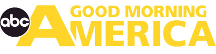
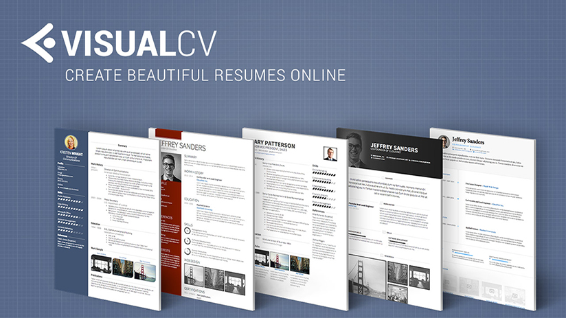

VisualCV in the News
7 Resources to help you land your dream job
"The best part of VisualCV is that you don't have to constantly tweak your resume and save it in a million different formats — the platform makes it easy to keep track of which resumes you're sending to various companies, and it makes creating and managing multiple versions of your resume simple."
Get that Job: 6 Online Resume Tools
If you're looking for a well-designed, feature-rich site, VisualCV is the place to go...VisualCV is my favorite service in this roundup. If you're looking for a resume app, this should be the first one to try out."
Getting in the door with a multimedia resume
Lauren Wilson, a graduate student studying human resources at Missouri State University, had been looking for a paid internship outside her state since August, but only got serious interest when she opted to create a multimedia resume through VisualCV.com.
Your Best Web Footprint Forward
Ms. Johnson said VisualCV.com was far and away the best of the four sites. "It has a clean, clear, crisp layout," she says. From an employer's perspective, she felt it is easy to follow, and a visitor isn't left wondering what to click.

Three New Ways to Get Hired
VisualCV allows anyone to create a free media-rich online resume, which means lots of bells and whistles and much more information than you could ever fit on a single piece of paper: employment history, education, awards, letters of recommendation, writing samples, articles, artwork whatever is applicable to your background.
Need work? Update yourself
When it comes to your resume, your regular old-fashioned paper is not enough. Go to VisualCV.
Now, that's a Web site. It creates an internet-based resume for you. And you can include video, pictures, audio, graphics, all these components into an online resume.
Press and demo kit
Logo
Icon
VisualCV Examples
Product Screenshots
Promotional Banner

Company and Product Overview
VisualCV Description
For any aspiring professional, making a resume that stands out from the competition is a difficult task. VisualCV enables users to easily create beautifully crafted resumes that deliver a powerful first impression.
With hundreds of thousands of members ranging from professional athletes to top-level executives, VisualCV is a must-have tool for any professional.
Today companies are not only looking for a skills fit but also a cultural fit. Yet, resumes do a very poor job of representing the personality of an individual and often times misrepresent them. Using a poorly formatted resume can instantly signal that someone is either not tech savvy enough, not professional enough, or just plain uninteresting. Much like the attire you wear to an interview, your resume speaks about your personality and your tastes. VisualCV makes formatting a resume as easy as choosing a suit to wear. Along with a variety of premium designs, VisualCV includes several unique features.
Resume Version control
VisualCV makes the process of managing multiple resumes simple. Users can change the visual layout of their resumes with the click of a button, and the platform automatically formats information to adjust to each template. The user can also send their resumes out with specifically tagged links to know when an employer has opened their email and viewed their resume. The platform provides and growing list of distinct resume designs to choose from and a database of real cv samples from their top public users.
Multi-media uploads
Along with traditional resume designs, VisualCV enables users to add video, powerpoint, documents, and images to a web-based resume. This allows users to share both a traditional PDF resume, and a web version that brings that resume to life with verified work samples.
Resume Tracking
Professional can avoid the resume black hole with VisualCV analytics by tracking of resume views and downloads. Beyond tracking IP addresses and URLs, users can even share unique links to know when your resume is seen by a specific person.
Multiple publishing options and languages.
Users are in full control of their privacy, and can publish a public or private VisualCV in web, mobile, and PDF format. It is available in 8 different languages.
Company Description
VisualCV was founded in 2004, and acquired in 2010 by Talent Technology Inc. In 2014, a new company was incorporated to advance the VisualCV brand. With decades of experience in the online recruitment sector our team is committed to building effective software to help professionals worldwide build their best careers.